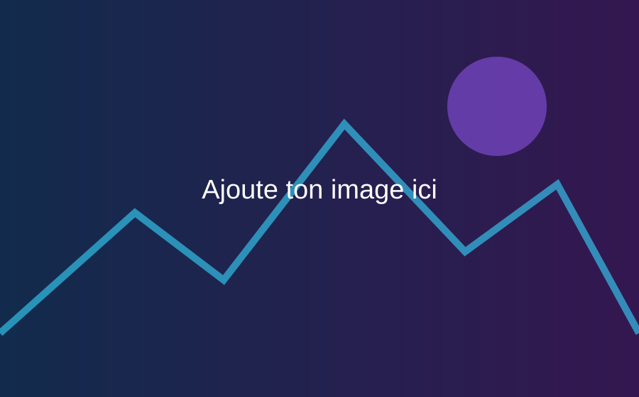

🎮
Collections
Consoles, jeux physiques, accessoires, guides et objets rétro.
Visiter la galerie →Streamer passionné de rétro-gaming, de collections et de jeux méconnus qui méritent d’être redécouverts.
Un site pensé comme un petit musée interactif consacré aux jeux, aux défis et aux souvenirs de joueur.
Consoles, jeux physiques, accessoires, guides et objets rétro.
Visiter la galerie →Les jeux que je recommande et que j’ai envie de faire découvrir.
Voir mes recommandations →Mes objectifs, concepts spéciaux, marathons et rendez-vous communautaires.
Découvrir les projets →
Un jeu de gestion coloré, accessible et rempli de détails. Une vraie capsule temporelle pour les amateurs de jeux de construction et de nostalgie.
Remplace les liens ci-dessous par les adresses de tes réseaux.